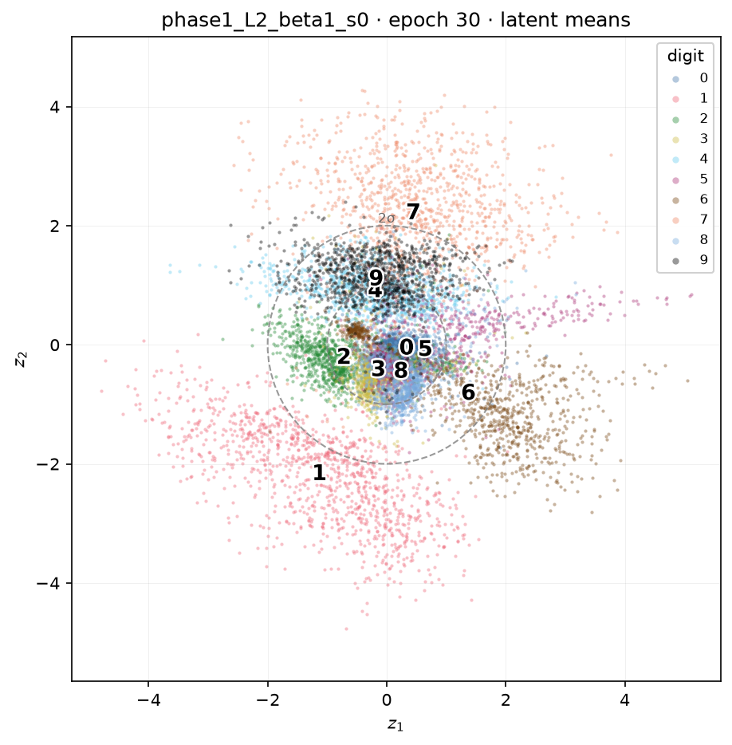
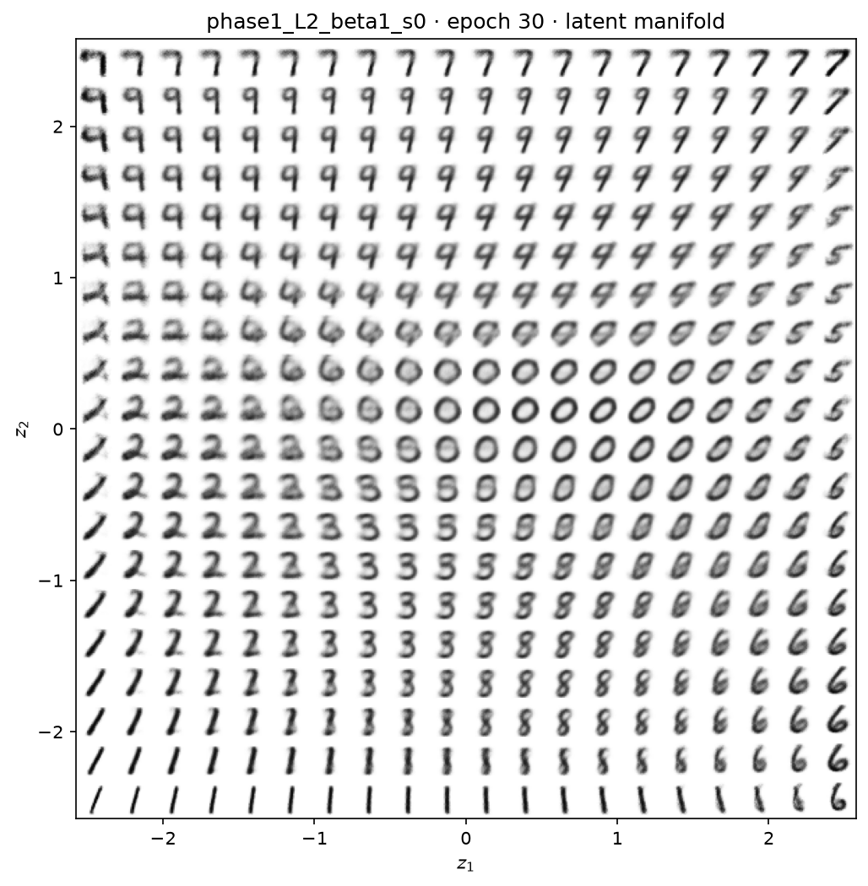
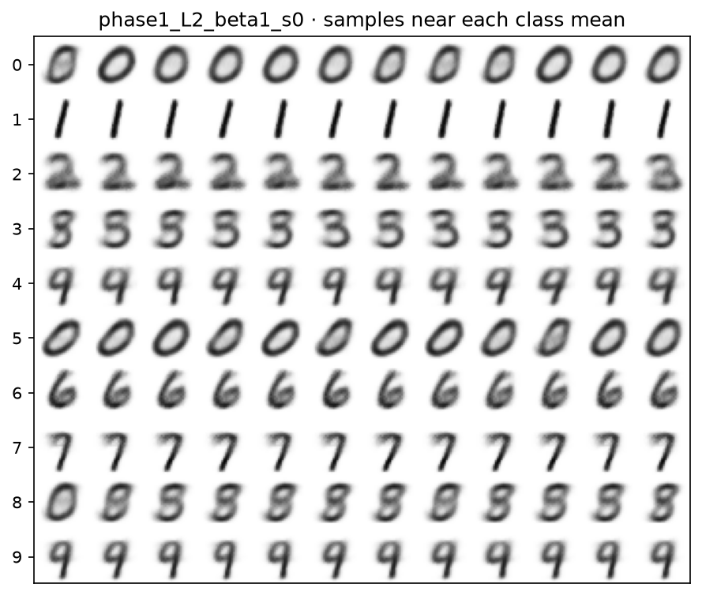
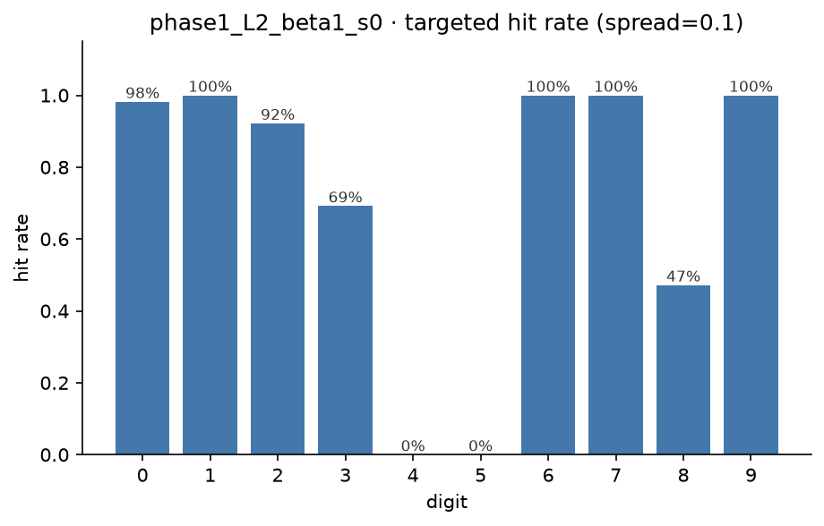
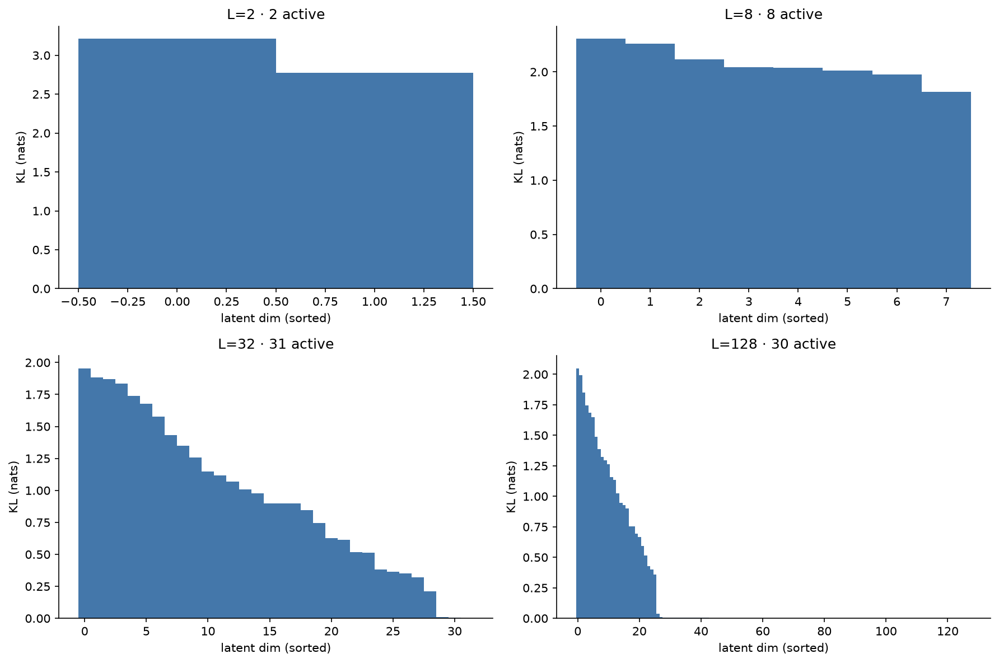
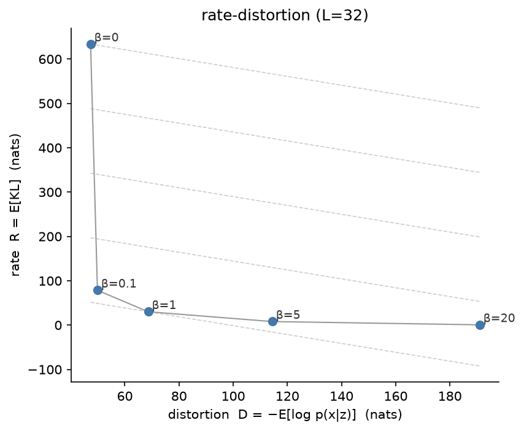
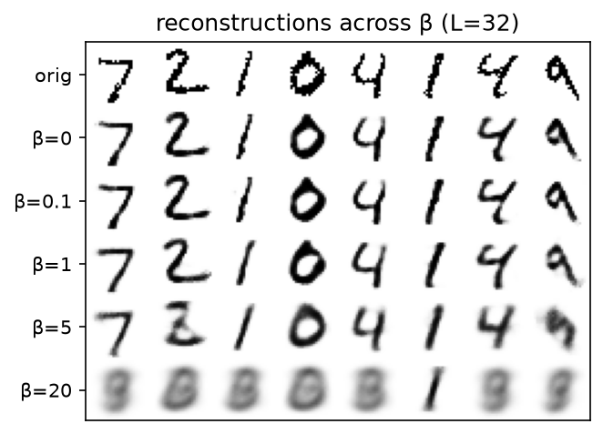
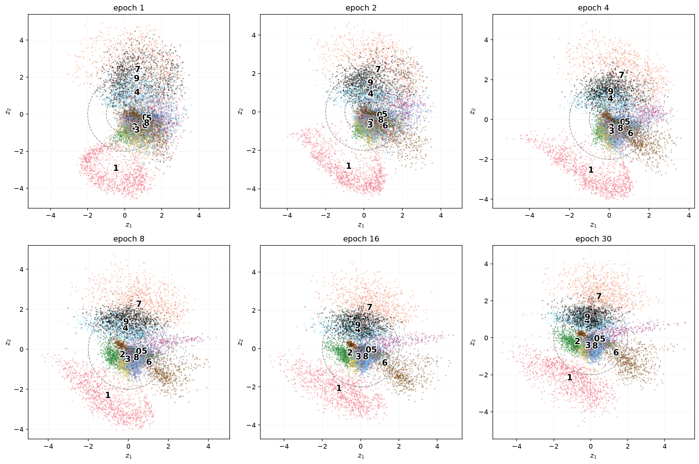

What's inside a VAE: A peep into the Latent Space
Previously we had explored the theory of the variational auto-encoder: the latent-variable motivation, the intractable marginal likelihood, and the ELBO with its reconstruction term and KL regularisation term that pulls the approximate posterior towards the prior. Here, in this complementary post, we try to figure what happens when we actually build the thing. To visualise things, we deliberately cripple it down to a two-dimensional latent space, and look at what it learned.
The reason to force just two latent dimensions is that two numbers can be plotted on a graph. Everything a normal VAE keeps hidden in a 32 or 128-dimensional code becomes a picture we can point at in 2D. The cost is a brutal bottleneck, the whole of a handwritten digit squeezed through two numbers and rebuilt, but it serves our purpose of understanding the insides. In later steps we expand the dimensions to create a more capable VAE.
The setup¶
We use the MNIST database to train and explore the VAE. The model is as small as it can be while still being a VAE: an MLP encoder \(784 → 400 → {μ, log(\sigma^2)}\) with a two-dimensional latent, and a mirror-image decoder \(2 → 400 → 784\). Initially we train it on MNIST for 30 epochs at \(\beta = 1\) (the vanilla ELBO). One thing to remember is that we train this model unsupervised, in that the model never sees the digit labels. Its only objective is to compress each image and reconstruct it. Wherever a digit appears in what follows, the labels were attached afterwards, purely to colour the plots.
Any structure we see is structure the model discovered on its own without supervision.
Seeing the latent space¶
The first experiment is the simplest. Encode all 10,000 test images, take each one's posterior mean \(\mu\) (two numbers), and scatter them, coloured by the true digit.

Ten near distinct clusters, drawn by a model that was never told there were ten of anything. This is the moment the VAE paradigm "clicks". The compression objective alone, pack these images into two numbers so you can rebuild them, forces visually similar digits to nearby locations, and the classes fall out for free.
The overlaps are as instructive as the separations. 7 and 1 sit in clean, distinct territory, 3/5/8/0 and 4/9 bleed into each other, because those digits (handwritten) genuinely look alike and the model, reasoning only from pixels, places similar shapes together. Notice too that the points spill well outside the dashed circles marking the \(1\sigma\) and \(2\sigma\) contours of the \(\mathcal{N}(0, I)\) prior. That gap, the aggregate posterior sitting wider than the prior says it should is the prior hole, and it explains a failure we will hit shortly.
The manifold¶
The scatter shows where real digits land. The complementary view is what the decoder generates from samples everywhere across latent space. Lay a grid across the latent plane, decode every point to an image, tile the results and we see the following picture.

This is the manifold everyone talks about, made literal. A continuous sheet on which every writable digit lives somewhere, with smooth morphs between neighbours and no hard boundaries. Not one of these generated digits is real. Each is the decoder's answer to if a digit lived at this coordinate, what would it look like?
Two details worth reading off this view. The clean, canonical digits sit toward the periphery, while the ambiguous blends sit in the centre, at the crossroads where several clusters meet. That is counterintuitive until we remember the prior hole: the clusters were pushed outward, so the origin, which is where prior sampling is densest, is exactly where the least digit-like mush lives.
The mean of a class is not a member of the class¶
If the 3-cluster lives in one region and the 8-cluster in another, can we generate a chosen digit by sampling near its cluster's centre? Compute \(\bar{\mu}_c\), the average latent position of every image of digit \(c\), sample a tight cloud around it, decode, and check what comes out with an independent CNN classifier (99% accurate on its own).

Each row samples near one digit's centroid. Most rows are exactly what we'd hope — recognisable, consistent digits. But look at the rows for 4 and 5.

The hit rate, i.e. the fraction of samples that actually come out as the target digit is a clean 98–100% for 0, 1, 6, 7, 9, but 0% for 4 and for 5. Not just poor, but zero. The lesson is a general one that bites well beyond VAEs:
The mean of a class need not be a member of the class.
The 4s form a crescent wrapped around the 9-region, so their average lands squarely in 9-territory. Sampling there produces 9s every time. The 5s average into the 3/8 tangle. Averaging is only a good summary when a class occupies a compact, convex region. In a two-dimensional space starved for room, several classes simply don't.
How many dimensions does MNIST actually need?¶
Two dimensions is a caricature. What happens with room to breathe? Training the same VAE at latent sizes \(L \in \{2, 8, 32, 128\}\) and looking at the per-dimension KL, i.e. how much information each latent dimension carries, reveals a most interesting observation.

At \(L = 128\), the model lights up roughly 30 dimensions and leaves the other ~98 at essentially zero KL. Given 128 dimensions, it refuses to use most of them. This is the information bottleneck from the rate objective in action. Each active dimension costs KL but must earn that cost by improving reconstruction, and once the ~30 dimensions MNIST genuinely needs are used, the rest are pure overhead and get driven to the prior. The model, thus chose its own dimensionality.
The numbers across the sweep tell the same story from another angle:
| L | test ELBO | active units | linear probe |
|---|---|---|---|
| 2 | −151 | 2 / 2 | 66% |
| 8 | −109 | 8 / 8 | 88% |
| 32 | −99 | 31 / 32 | 89% |
| 128 | −99 | 30 / 128 | 94% |
The ELBO plateaus by \(L = 32\), a 4× bigger latent buys nothing more, because the model was already using only ~30 dimensions.
The Linear Probe
Though the VAE is a generative model and not a classifier, to measure its capabilities over MNIST, we trained a simple linear classifier. The linear probe is the accuracy of that linear classifier trained on the trained latent as well as over the raw MNIST pixels. At \(L = 2\) it sits below a 91% raw-pixel baseline signifying aggressive compression throwing away exactly the information we might have wanted for useful generation.
Compression versus reconstruction: the β knob¶
We next use a weight, \(\beta\) on the KL term, which acts as a dial on the ELBO, tuning it between reconstruction and regularisation. Holding \(L = 32\) and sweeping \(\beta\) we trace out the rate–distortion curve, plotting rate \(R\) (the KL, the information pushed through the latent) against distortion \(D\) (the reconstruction cost), both in nats.

Every \(\beta\) is one operating point on a convex frontier. We cannot have both low rate and low distortion, and \(\beta\) chooses where we sit. The reconstructions across the same sweep make it visceral.

Small \(\beta\) gives sharp reconstructions; large \(\beta\) smears digits toward blurry averages as the latent is abandoned. The two endpoints are each instructive failures:
- \(\beta = 0\) removes the KL brake entirely. Reconstruction is sharpest, but the latent now carries 634 nats ≈ 914 bits to represent a 784-bit image. That is expansion as opposed to compression. Without the KL penalty the encoder makes ultra-precise, prior-mismatched codes. From a Shannon standpoint we would do better sending the raw pixels.
- \(\beta = 20\) over-penalises rate, and the latent collapses. Active units fall from 31 to 2, and the reconstructions become near-identical mush regardless of the input.
The useful representation lives at the knee. \(\beta = 1\) is exactly ELBO-optimal, compressing a 784-bit image down to about 30 nats of shared, generalisable structure.
This is where Shannon meets the ELBO
\(-\text{ELBO} = D + R\). The rate \(R\) is literally the channel rate through the latent (the bits we would spend transmitting the code) and \(D\) is the residual we must patch up afterwards. \(\beta\) trades one against the other.
Watching features emerge¶
A final experiment, before we move on from VAEs. The 2D model was checkpointed on a log-spaced schedule, so we can replay the latent scatter across training and watch structure form across training epochs.

Surprisingly, emergence is not monotonic. 1 and 7, the most visually distinctive digits resolve at the very first epoch and stay put. They are the easy features, learned first. The crowded middle (0/2/3/5/6/8) starts as an undifferentiated blob and separates slowly and only partially. And 4 and 9 appear cleanly separated early, then re-entangle as training proceeds. An early, crude arrangement gets overwritten as the model optimises globally under the two-dimensional constraint, sacrificing the 4/9 split (cheap to give up, since they look alike) to make room for the harder digits.
If we only looked at the final epoch, we would conclude "4 and 9 overlap because they're similar". True, but we would miss that the model tried separating them and sacrificed them. Features form, drift, merge, and sometimes vanish. The training dynamics reorganise a representation rather than simply sharpening it.
What a representation keeps¶
In conclusion, a VAE keeps the handful of shared factors that let it rebuild the data, about thirty dimensions' worth for MNIST and discards the per-instance detail as redundant. \(\beta\) sets how ruthless that discarding is, and the interesting representations sit at the knee between hoarding everything and collapsing to nothing.
The next question we attempt is whether a different objective, one with no reconstruction at all, keeps things different. That is the subject of the following post on self-supervised learning: no decoder, no pixels to rebuild, just the constraint that two views of an image should agree, evaluated, as here, with a linear probe on the frozen representation. The same yardstick, but a very different route.